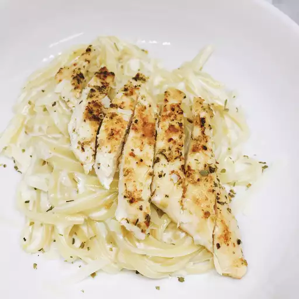

Pot Chicken

Description
The beauty of this chicken Alfredo is
that it's done in less than thirty
minutes, ingredients are minimal,
and there is only one pan to wash!
The thinly sliced chicken breasts
are what allows this to cook
so much faster.
Ingredients
- ½ pound skinless, boneless chicken breasts
- ½ teaspoon garlic salt
- ½ teaspoon Italian seasoning
- 1 tablespoon olive oil
- 2 cups milk
- 1 large clove garlic, minced
- 8 ounces fettucine, broken in half
- ½ cup heavy whipping cream
- ¾ cup freshly grated Parmesan cheese, plus more for serving
Steps
- Slice each chicken breast horizontally into 3 thinner pieces using a sharp knife. Sprinkle each chicken piece with garlic salt and Italian seasoning on both sides
- Heat olive oil in a large skillet over medium-high heat. Add chicken and cook until golden and cooked through, about 2 minutes per side. Remove onto a plate.
- Add milk and garlic to the skillet. Bring to a simmer and add fettuccine. Cook, stirring every 30 seconds to prevent sticking until pasta has softened, about 3 minutes. Reduce heat to medium and cook, stirring every couple of minutes, 6 to 7 minutes more. Stir in cream and Parmesan cheese. Simmer, stirring occasionally, until sauce has thickened and pasta is cooked, about 2 more minutes.
- Serve immediately and garnish with additional Parmesan cheese if desired.